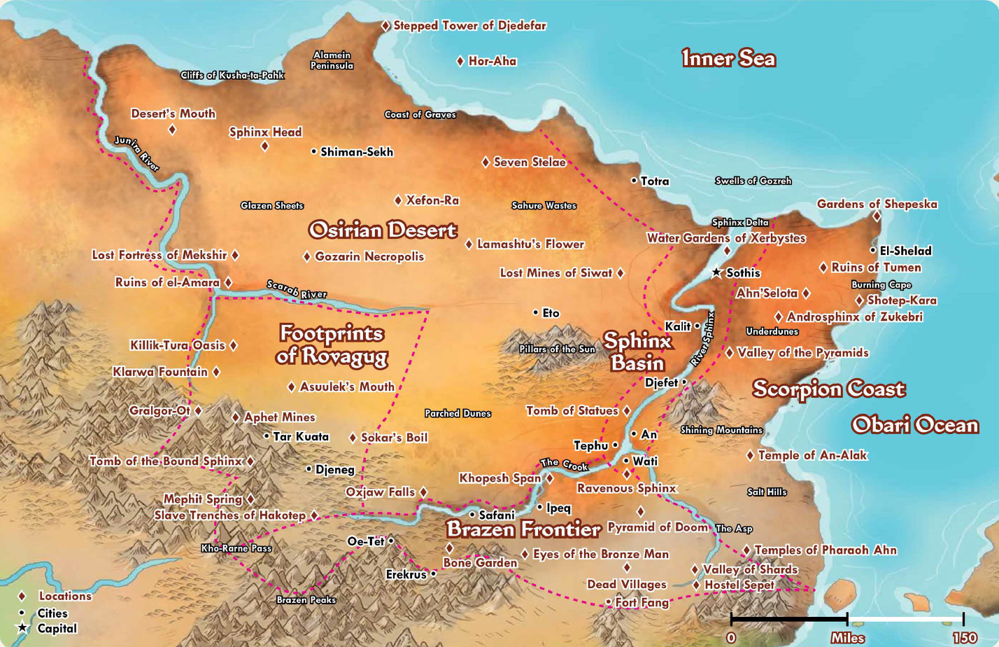

Cette aventure est conçue pour 4 personnages Gestalt de niveau 6, avec toutes les houserules.
Convocation
L'honorable chef de la ville de Djeneg, le Kha Nub-Hotep, vous convie à une affaire d'une importance pressante, en tant qu'aventurier d'expérience.
Le désert nous sépare de Shiman-Sekh, notre principal point de communication avec la mer et le reste d'Osirion,
mais les caravanes n'arrivent plus à passer: elles s'annoncent par les airs mais disparaissent en chemin.
Ce canal marchand assure la prospérité autant que la survie de notre ville.
Nous avons besoin immédiat d'aventuriers tels que vous pour remédier promptement à la situation.
Évidemment, vivres et moyens de transport seront assurés par l'état.
Une généreuse récompense est prévue pour ceux qui feront passer une première caravane.
Ce que tu sais (Yann)
- La pyramide volante du pharaon Hakotep 1er s'est écrasée il y a un an près d'Asuulek's Mouth, pleine de mort-vivants. Ils ont probablement attiré des nécrophages.
- Cette mission pourrait attirer l'attention du prince de Ruby, Khemet III: la rumeur veut qu'il cherche des candidats pour le test de la StarStone.
Ce que tu sais (Jo)
- Le chemin est coupé par la Scarab River. Elle est dangereuse à cause de ses crocodiles géants, appelés Hetkoshus.
Tu ne veux définitivement pas affronter un Hetkoshu.
- Tu connais quelques pêcheurs qui gardent un oeil sur la rivière, dont ton ami Chnoubis. Ils sauront plus de détails.
- Les marchands de Djeneg savent que cette route en plein désert est nécessaire et leur fait gagner beaucoup. Tu pourrais clairement réclamer des faveurs en plus de ta récompense.
Ce que tu sais (Oli)
- Un Behir habite la Nécropole de Gozarin. Il est peut-être responsable des disparitions, ou il en sait plus sur leur source.
- Les Behir sont des créatures capricieuses et colériques, mais on peut raisonner avec eux, surtout avec une offrande, surtout si elle est présentée d'entrée de jeu.
- On va probablement vous laisser garder le tapis volant après... Ça vaut une fortune, surtout si c'est Siptath, un artisan réputé, qui l'a fait!
Ce que tu sais (David)
- Près de Shiman-Sekh, il y a la Tête du Sphinx Noir, un temple ancien scellé par un pacte avec des élémentaux d'air. Le pacte a-t-il été brisé, laissant se répandre les élémentaux?
- Les hommes politiques voient une crise à l'horizon sans cette route. Être le héro qui la rétablit peut attirer de bonnes faveurs, ou un pardon facile.
Combats
Carte de la région

{kind=link}